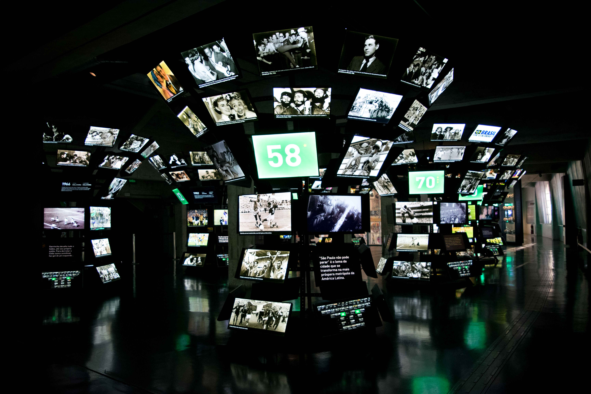

Sobre o local
O Museu do Futebol é um espaço totalmente interativo localizado sob as arquibancadas do histórico Estádio do Pacaembu. O local narra como o esporte bretão se transformou em uma das principais manifestações culturais do Brasil.
“O futebol é a expressão da nossa cultura, memória e emoção coletiva.”

Informações
Horários de funcionamento, ingressos e avaliação
| Item | Detalhe | Observação |
|---|---|---|
| Funcionamento | Terça-feira a domingo, das 09h00 às 17h00 | Permanência até 18h00; Fechado às segundas |
| Entrada | Paga (Gratuito às terças-feiras) | Meia-entrada disponível mediante comprovação |
| Avaliação média | 4,7 de 5 | Mais de 25.000 avaliações de visitantes |
Atrações e Destaques
- Salas Temáticas: Sala das Origens, Sala das Copas do Mundo, Sala dos Gols e Sala das Rádios.
- Experiência Interativa: Telões com jogadas históricas, narrações clássicas de rádio e simulação de chuta a gol.
- Acessibilidade e Estrutura: Espaço totalmente acessível, conta com loja oficial, café e auditório.
Próximos eventos
Exposição Temporária e Visia Guiada
- Dias:Terça a Domingo
- Horário: Sessões às 10h00 e 14h00
- Local: Sala de Exposições Temporárias
Contato e links
Planeje sua visita e encontre mais detalhes nos links oficiais: